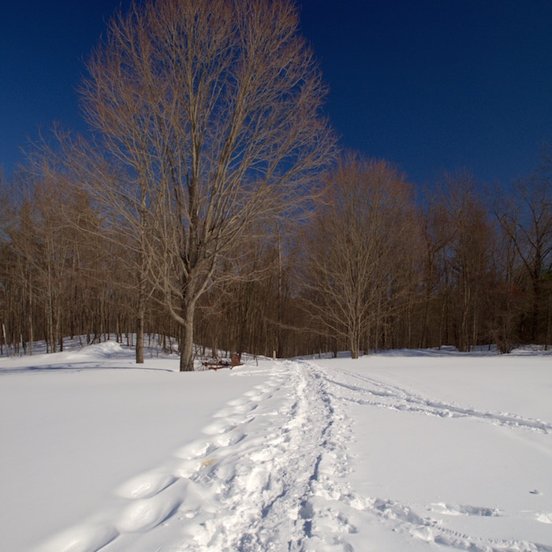

Welcome and explore the Groton trail system. Groton has over 10 square miles of conservation land with over a 100 miles of maintained trails. Explore lakes, eskers, oxbo's, drumlins, kettle holes, rivers, streams, vernal pools, fields, hills, working farms, swimming holes, a historic barn, beaver dams, kinetic art, bike trails, and of coarse wildlife. The navigation bar has an interactive map of the trails and suggested list of fun trail activities. To contact us see our About Us Page.
The friends of the Groton Trail Network would like to thank the many landowners that make our wonderful trail network possible. Groton Conservation Commission, Groton Conservation Trust, New England Forestry Foundation, Mass Audubon, Mass Department of Conservation and Recreation, and Hazel Grove Park. The mass-trails.org site has a complete list of the 200 conservation properties and landowners in Groton.
After exploring our trail network, check out the trails in the towns surrounding Groton. Littleton Conservation Trust, Westford Conservation Trust, Pepperell Trail Guide, Dunstable Trail Maps, Dunstable Rural Land Trust, and Townsend Trail Map.
If you are unsure of anything regarding the trails, take a look at our Trail Use Guidelines.